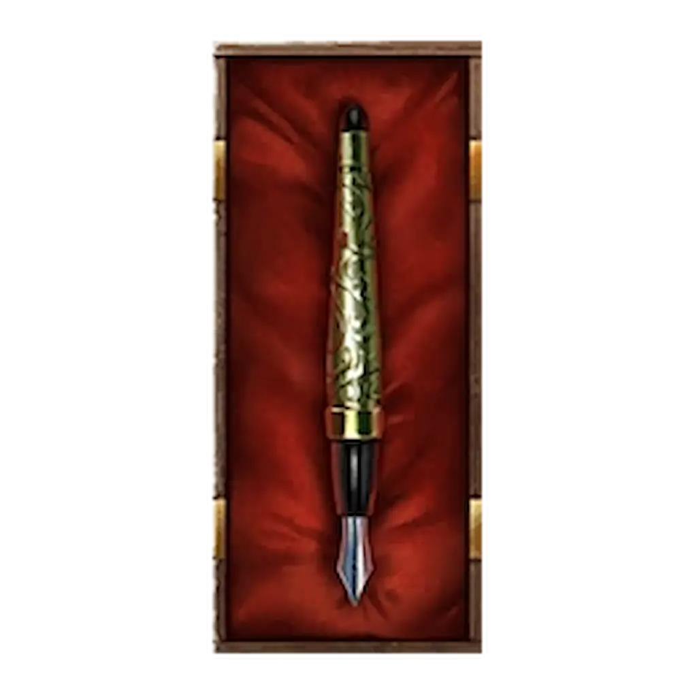
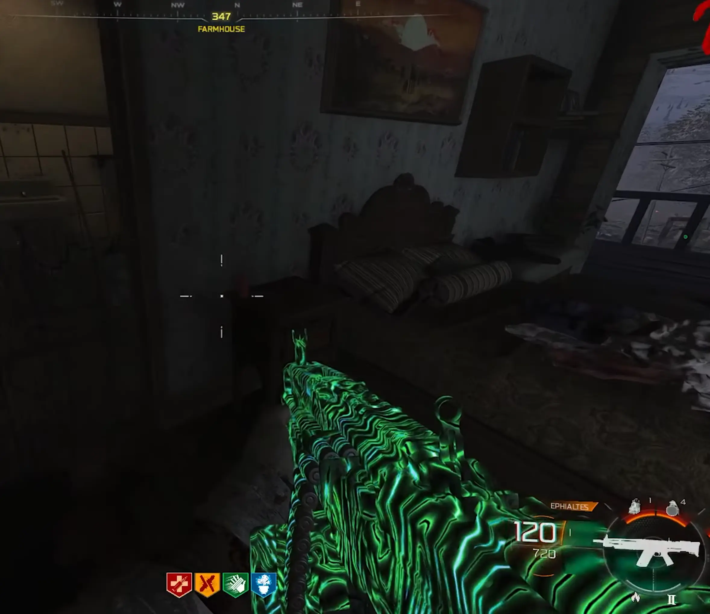

← Powrót do poprzedniej strony
Musisz ukończyć główne zadanie na mapie Ashes Of The Damned. Zadanie aktywuje się od rundy 20+.

KROK 1: Wymagane narzędzia:
- Ekwipunek: Potrzebujesz modyfikacji amunicji Napalm Burst (Wybuch Napalmu) na broni LUB Molotovs (Mołotowy). Musisz mieć czym podpalić świece.
KROK 2: Zapalenie trzech świec
Musisz odnaleźć i podpalić trzy świece ukryte na mapie. Możesz to zrobić w dowolnej kolejności, ale najlepiej zacząć od tych w Ashwood.
- Ruby Rabbit (Ashwood):Wejdź do klubu Ruby Rabbit. Świeca znajduje się w rogu, bezpośrednio pod schodami. Po prawej od JaggerNog
- Lost Cabins (Tunel Ashwood – Blackwater Lake): Udaj się do tunelu łączącego Ashwood z jeziorem. Świeca stoi na małej szafce (szufladzie) między sofą a szafą w jednej z chat.
- Van Dorn Farm: Wejdź na piętro domu na farmie. Świeca znajduje się tuż obok łóżka.



PRO TIP: Świecę na farmie zapalcie jako ostatnią, bo to tam pojawi się portal do wyzwania.
KROK 3: Próba:
Gdy zapalisz wszystkie świece, przy domu na farmie otworzy się zielony portal.
- Przygotowanie: Upewnij się, że masz solidne Perki i ulepszoną broń. Jeśli grasz w ekipie, musicie zagłosować, aby wejść.
- Wyzwanie: Zostaniesz przeteleportowany do wersji mapy z zielonym filtrem. Twoim zadaniem jest przetrwanie 4 fal, w których będą atakować Cię wyłącznie Shock Mimics (Szokowe Mimiki).
- Postęp: Na ekranie zobaczysz pasek postępu pokazujący, ilu wrogów musisz jeszcze wyeliminować.
NAGRODA: Relikt Pióro Prawnika
Co daje ten relikt po aktywacji?
- EFEKT: Mimic Props: Na mapie zaczną pojawiać się Mimiki udające elementy otoczenia (rekwizyty). Normalnie nie występują one w ten sposób, więc to dodatkowe, dość irytujące zagrożenie, gdy najmniej się go spodziewasz.